The second edition of Think Complexity is available from Bookshop.org and Amazon (those are affiliate links). If you are enjoying the free, online version, consider buying me a coffee.
11. Evolution#
The most important idea in biology, and possibly all of science, is the theory of evolution by natural selection, which claims that new species are created and existing species change due to natural selection. Natural selection is a process in which inherited variations between individuals cause differences in survival and reproduction.
Among people who know something about biology, the theory of evolution is widely regarded as a fact, which is to say that it is consistent with all current observations; it is highly unlikely to be contradicted by future observations; and, if it is revised in the future, the changes will almost certainly leave the central ideas substantially intact.
Nevertheless, many people do not believe in evolution. In a survey run by the Pew Research Center, survey respondents were asked which of the following claims is closer to their view:
Humans and other living things have evolved over time.
Humans and other living things have existed in their present form since the beginning of time.
About 34% of Americans chose the second (see https://thinkcomplex.com/arda).
Even among the ones who believe that living things have evolved, barely more than half believe that the cause of evolution is natural selection. In other words, only a third of Americans believe that the theory of evolution is true.
How is this possible? In my opinion, contributing factors include:
Some people think that there is a conflict between evolution and their religious beliefs. Feeling like they have to reject one, they reject evolution.
Others have been actively misinformed, often by members of the first group, so that much of what they know about evolution is misleading or false. For example, many people think that evolution means humans evolved from monkeys. It doesn’t, and we didn’t.
And many people simply don’t know anything about evolution.
There’s probably not much I can do about the first group, but I think I can help the others. Empirically, the theory of evolution is hard for people to understand. At the same time, it is profoundly simple: for many people, once they understand it, it seems both obvious and irrefutable.
To help people make this transition from confusion to clarity, the most powerful tool I have found is computation. Ideas that are hard to understand in theory can be easy to understand when we see them happening in simulation. That is the goal of this chapter.
Click here to run this notebook on Colab.
import matplotlib.pyplot as plt
import numpy as np
Show code cell content
from os.path import basename, exists
def download(url):
filename = basename(url)
if not exists(filename):
from urllib.request import urlretrieve
local, _ = urlretrieve(url, filename)
print('Downloaded ' + local)
download('https://github.com/AllenDowney/ThinkComplexity/raw/v3/nb/utils.py')
from utils import decorate, savefig
# make a directory for figures
!mkdir -p figs
11.1. Simulating evolution#
I start with a simple model that demonstrates a basic form of evolution. According to the theory, the following features are sufficient to produce evolution:
Replicators: We need a population of agents that can reproduce in some way. We’ll start with replicators that make perfect copies of themselves. Later we’ll add imperfect copying, that is, mutation.
Variation: We need variability in the population, that is, differences between individuals.
Differential survival or reproduction: The differences between individuals have to affect their ability to survive or reproduce.
To simulate these features, we’ll define a population of agents that represent individual organisms. Each agent has genetic information, called its genotype, which is the information that gets copied when the agent replicates. In our model, which is a variant of the NK model developed primarily by Stuart Kauffman (see https://thinkcomplex.com/nk), a genotype is represented by a sequence of N binary digits (zeros and ones), where N is a parameter we choose.
To generate variation, we create a population with a variety of genotypes; later we will explore mechanisms that create or increase variation.
Finally, to generate differential survival and reproduction, we define a function that maps from each genotype to a fitness, where fitness is a quantity related to the ability of an agent to survive or reproduce.
11.2. Fitness landscape#
The function that maps from genotype to fitness is called a fitness landscape. In the landscape metaphor, each genotype corresponds to a location in an N-dimensional space, and fitness corresponds to the “height” of the landscape at that location. For visualizations that might clarify this metaphor, see https://thinkcomplex.com/fit.
In biological terms, the fitness landscape represents information about how the genotype of an organism is related to its physical form and capabilities, called its phenotype, and how the phenotype interacts with its environment.
In the real world, fitness landscapes are complicated, but we don’t need to build a realistic model. To induce evolution, we need some relationship between genotype and fitness, but it turns out that it can be any relationship. To demonstrate this point, we’ll use a totally random fitness landscape.
Here is the definition for a class that represents a fitness landscape:
class FitnessLandscape:
def __init__(self, N):
"""Create a fitness landscape.
N: number of dimensions
"""
self.N = N
self.set_values()
def set_values(self):
self.one_values = np.random.random(self.N)
self.zero_values = np.random.random(self.N)
def random_loc(self):
"""Choose a random location."""
return np.random.randint(2, size=self.N, dtype=np.int8)
def fitness(self, loc):
"""Evaluates the fitness of a location.
loc: array of N 0s and 1s
returns: float fitness
"""
fs = np.where(loc, self.one_values, self.zero_values)
return fs.mean()
def distance(self, loc1, loc2):
return np.sum(np.logical_xor(loc1, loc2))
The genotype of an agent, which corresponds to its location in the fitness landscape, is represented by a NumPy array of zeros and ones called loc. The fitness of a given genotype is the mean of N fitness contributions, one for each element of loc.
To compute the fitness of a genotype, FitnessLandscape uses two arrays: one_values, which contains the fitness contributions of having a 1 in each element of loc, and zero_values, which contains the fitness contributions of having a 0.
The fitness method uses np.where to select a value from one_values where loc has a 1, and a value from zero_values where loc has a 0.
As an example, suppose N=3 and
one_values = [0.1, 0.2, 0.3]
zero_values = [0.4, 0.7, 0.9]
In that case, the fitness of loc = [0, 1, 0] would be the mean of [0.4, 0.2, 0.9], which is 0.5.
Here’s a 3-D landscape with random values.
fit_land = FitnessLandscape(3)
fit_land.N
3
one_values and zero_values contain the fitness contributions of having a 1 or 0 at each element of the location array.
fit_land.one_values, fit_land.zero_values
(array([0.08165061, 0.73847146, 0.10521197]),
array([0.55907311, 0.13084348, 0.75675081]))
Here’s a random location and its fitness contributions.
loc = fit_land.random_loc()
loc
array([0, 1, 0], dtype=int8)
a = np.where(loc, fit_land.one_values, fit_land.zero_values)
a, np.mean(a)
(array([0.55907311, 0.73847146, 0.75675081]), np.float64(0.6847651304341351))
fitness evaluates the fitness of a location.
loc, fit_land.fitness(loc)
(array([0, 1, 0], dtype=int8), np.float64(0.6847651304341351))
FitnessLandscape also provides random_loc, which chooses a random location, and distance, which we’ll use later.
11.3. Agents#
Next we need agents. Here’s the class definition:
class Agent:
"""Represents an agent in an NK model."""
def __init__(self, loc, fit_land):
"""Create an agent at the given location.
loc: array of N 0s and 1s
fit_land: reference to a FitnessLandscape
"""
self.loc = loc
self.fit_land = fit_land
self.fitness = fit_land.fitness(self.loc)
def copy(self):
return Agent(self.loc, self.fit_land)
The attributes of an Agent are:
loc: The location of theAgentin the fitness landscape.fit_land: A reference to aFitnessLandscapeobject.fitness: The fitness of thisAgentin theFitnessLandscape, represented as a number between 0 and 1.
loc = fit_land.random_loc()
agent = Agent(loc, fit_land)
agent.loc, agent.fitness
(array([0, 1, 1], dtype=int8), np.float64(0.46758551558176203))
Agent provides copy, which copies the genotype exactly. Later, we will see a version that copies with mutation, but mutation is not necessary for evolution.
11.4. Simulation#
Now that we have agents and a fitness landscape, I’ll define a class called Simulation that simulates the creation, reproduction, and death of the agents.
Here’s the definition of Simulation:
class Simulation:
def __init__(self, fit_land, agents):
"""Create the simulation:
fit_land: FitnessLandscape object
agents: array of Agents
"""
self.fit_land = fit_land
self.agents = np.asarray(agents)
self.instruments = []
def add_instrument(self, instrument):
"""Adds an instrument to the list.
instrument: Instrument object
"""
self.instruments.append(instrument)
def plot(self, index, *args, **kwargs):
"""Plot the results from the indicated instrument.
"""
self.instruments[index].plot(*args, **kwargs)
def run(self, num_steps=500):
"""Run the given number of steps.
num_steps: integer
"""
# initialize any instruments before starting
self.update_instruments()
for _ in range(num_steps):
self.step()
def update_instruments(self):
for instrument in self.instruments:
instrument.update(self)
def get_locs(self):
"""Returns a list of agent locations."""
return [tuple(agent.loc) for agent in self.agents]
def get_fitnesses(self):
"""Returns an array of agent fitnesses."""
fits = [agent.fitness for agent in self.agents]
return np.array(fits)
The attributes of a Simulation are:
fit_land: A reference to aFitnessLandscapeobject.agents: An array ofAgentobjects.instruments: A list ofInstrumentobjects, which I’ll explain soon.
The most important function in Simulation is step, which simulates one time step:
%%add_method_to Simulation
def step(self):
"""Simulate a time step and update the instruments.
"""
fits = self.get_fitnesses()
# see who dies
index_dead = self.choose_dead(fits)
num_dead = len(index_dead)
# replace the dead with copies of the living
replacements = self.choose_replacements(num_dead, fits)
self.agents[index_dead] = replacements
# update any instruments
self.update_instruments()
step uses three other methods:
get_fitnessesreturns an array containing the fitness of each agent.choose_deaddecides which agents die during this time step, and returns an array that contains the indices of the dead agents.choose_replacementsdecides which agents reproduce during this time step, invokescopyon each one, and returns a list of newAgentobjects.
In this version of the simulation, the number of new agents during each time step equals the number of dead agents, so the number of live agents is constant.
11.5. No differentiation#
Before we run the simulation, we have to specify the behavior of choose_dead and choose_replacements. We’ll start with simple versions of these functions that don’t depend on fitness:
%%add_method_to Simulation
def choose_dead(self, ps):
"""Choose which agents die in the next timestep.
ps: probability of survival for each agent
returns: indices of the chosen ones
"""
n = len(self.agents)
is_dead = np.random.random(n) < 0.1
index_dead = np.nonzero(is_dead)[0]
return index_dead
In choose_dead, n is the number of agents and is_dead is a boolean array that contains True for the agents who die during this time step. In this version, every agent has the same probability of dying: 0.1. choose_dead uses np.nonzero to find the indices of the non-zero elements of is_dead (True is considered non-zero).
%%add_method_to Simulation
def choose_replacements(self, n, weights):
"""Choose which agents reproduce in the next timestep.
n: number of choices
weights: array of weights
returns: sequence of Agent objects
"""
agents = np.random.choice(self.agents, size=n, replace=True)
replacements = [agent.copy() for agent in agents]
return replacements
In choose_replacements, n is the number of agents who reproduce during this time step. It uses np.random.choice to choose n agents with replacement. Then it invokes copy on each one and returns a list of new Agent objects.
These methods don’t depend on fitness, so this simulation does not have differential survival or reproduction. As a result, we should not expect to see evolution. But how can we tell?
11.6. Evidence of evolution#
The most inclusive definition of evolution is a change in the distribution of genotypes in a population. Evolution is an aggregate effect: in other words, individuals don’t evolve; populations do.
In this simulation, genotypes are locations in a high-dimensional space, so it is hard to visualize changes in their distribution. However, if the genotypes change, we expect their fitness to change as well. So we will use changes in the distribution of fitness as evidence of evolution. In particular, we’ll look at the mean and standard deviation of fitness over time.
To avoid the effect of random changes in the starting population, we start every simulation with the same set of agents. And to make sure we explore the entire fitness landscape, we start with one agent at every location. make_all_agents creates one Agent for every location:
import itertools
def make_all_agents(fit_land, agent_maker):
"""Make an array of Agents.
fit_land: FitnessLandscape
agent_maker: class used to make Agent
returns: array of Agents
"""
N = fit_land.N
locations = itertools.product([0, 1], repeat=N)
agents = [agent_maker(loc, fit_land) for loc in locations]
return np.array(agents)
make_all_agents uses itertools.product, which returns a generator that enumerates the Cartesian product of the set {0, 1} with itself N times, which is a fancy way to say that it enumerates all sequences of N bits. Here’s an example:
fit_land = FitnessLandscape(3)
agents = make_all_agents(fit_land, Agent)
for agent in agents:
print(agent.loc, agent.fitness)
(0, 0, 0) 0.6971375912158907
(0, 0, 1) 0.5904773583585717
(0, 1, 0) 0.5824530059507769
(0, 1, 1) 0.4757927730934579
(1, 0, 0) 0.8392345909763529
(1, 0, 1) 0.7325743581190339
(1, 1, 0) 0.724550005711239
(1, 1, 1) 0.61788977285392
We’ll use two other functions to create agents later. The first starts with identical agents:
def make_identical_agents(fit_land, num_agents, agent_maker):
"""Make an array of Agents.
fit_land: FitnessLandscape
num_agents: integer
agent_maker: class used to make Agent
returns: array of Agents
"""
loc = fit_land.random_loc()
agents = [agent_maker(loc, fit_land) for _ in range(num_agents)]
return np.array(agents)
The second starts with agents at random locations:
def make_random_agents(fit_land, num_agents, agent_maker):
"""Make an array of Agents.
fit_land: FitnessLandscape
num_agents: integer
agent_maker: class used to make Agent
returns: array of Agents
"""
locs = [fit_land.random_loc() for _ in range(num_agents)]
agents = [agent_maker(loc, fit_land) for loc in locs]
return np.array(agents)
Let’s create a fitness landscape with an agent at each location and see what the distribution of fitness looks like.
np.random.seed(17)
N = 8
fit_land = FitnessLandscape(N)
agents = make_all_agents(fit_land, Agent)
sim = Simulation(fit_land, agents)
plot_fitnesses plots the CDF of fitness across the population.
try:
import empiricaldist
except ImportError:
!pip install empiricaldist
from empiricaldist import Cdf
def plot_fitnesses(sim):
"""Plot the CDF of fitnesses.
sim: Simulation object
"""
fits = sim.get_fitnesses()
cdf_fitness = Cdf.from_seq(fits)
cdf_fitness.plot()
return np.mean(fits)
Initially the distribution is approximately Gaussian, because it’s the sum of 8 independent uniformly distributed variates. See the Central Limit Theorem.
plot_fitnesses(sim)
decorate(xlabel='Fitness', ylabel='CDF')
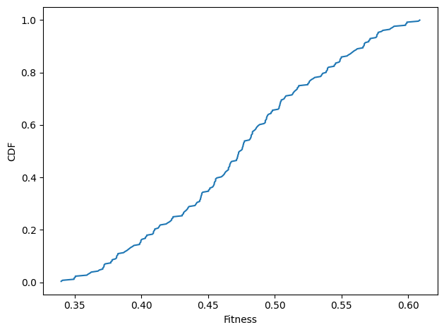
After one time step, there’s not much change.
sim.step()
plot_fitnesses(sim)
decorate(xlabel='Fitness', ylabel='CDF')
After 100 time steps, we can see that the number of unique values has decreased.
sim.run(100)
plot_fitnesses(sim)
decorate(xlabel='Fitness', ylabel='CDF')
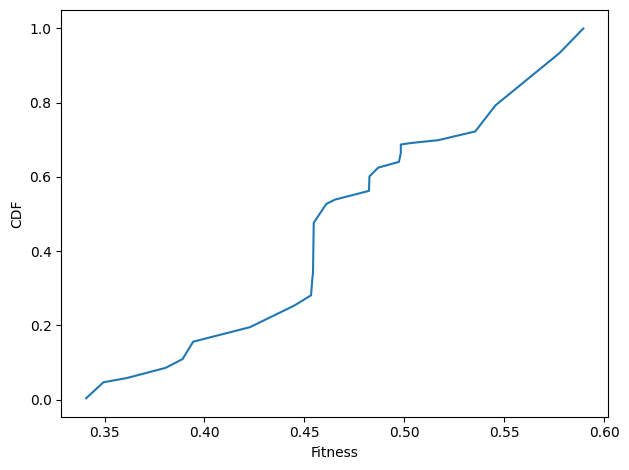
To measure these changes over the course of the simulations, we’ll add an Instrument, which is an object that gets updated after each time step, computes a statistic of interest, or “metric”, and stores the result in a sequence we can plot later.
Here is the parent class for all instruments:
class Instrument:
"""Computes a metric at each timestep."""
def __init__(self):
self.metrics = []
def update(self, sim):
"""Compute the current metric.
Appends to self.metrics.
sim: Simulation object
"""
# child classes should implement this method
pass
def plot(self, **options):
plt.plot(self.metrics, **options)
And here’s the definition for MeanFitness, an instrument that computes the mean fitness of the population at each time step:
class MeanFitness(Instrument):
"""Computes mean fitness at each timestep."""
label = 'Mean fitness'
def update(self, sim):
mean = np.nanmean(sim.get_fitnesses())
self.metrics.append(mean)
Now we’re ready to run the simulation. Here’s the code that creates the Simulation, adds a MeanFitness instrument, runs the simulation, and plots the results:
np.random.seed(17)
N = 8
fit_land = FitnessLandscape(N)
agents = make_all_agents(fit_land, Agent)
sim = Simulation(fit_land, agents)
instrument = MeanFitness()
sim.add_instrument(instrument)
sim.run(500)
sim.plot(index=0)
decorate(xlabel='Time', ylabel='Mean fitness')
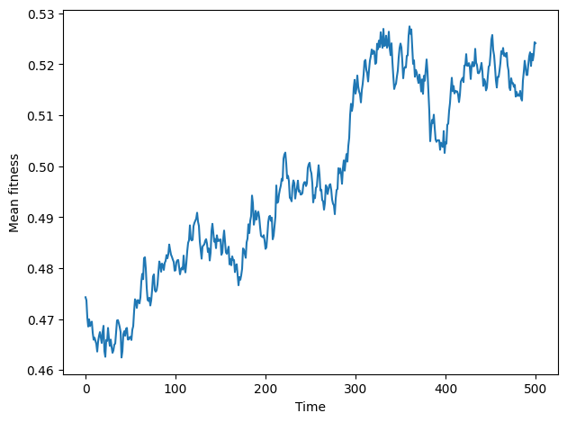
Simulation keeps a list of Instrument objects. After each time step it invokes update on each Instrument in the list.
We can get a better sense of average behavior, and variation around the average, by plotting multiple runs.
def plot_sims(fit_land, agent_maker, sim_maker, instrument_maker, **plot_options):
"""Runs simulations and plots metrics.
fit_land: FitnessLandscape
agent_maker: function that makes an array of Agents
sim_maker: function that makes a Simulation
instrument_maker: function that makes an instrument
plot_options: passed along to plot
"""
plot_options['alpha'] = 0.4
for _ in range(10):
agents = agent_maker(fit_land)
sim = sim_maker(fit_land, agents)
instrument = instrument_maker()
sim.add_instrument(instrument)
sim.run()
sim.plot(index=0, **plot_options)
decorate(xlabel='Time', ylabel=instrument.label)
return sim
agent_maker1 puts one agent at each location.
def agent_maker1(fit_land):
return make_all_agents(fit_land, Agent)
The following figure shows mean fitness over time for 10 simulations with no differential survival or reproduction.
np.random.seed(17)
plot_sims(fit_land, agent_maker1, Simulation, MeanFitness, color='C0')
savefig('figs/chap11-1')
Saving figure to file figs/chap11-1
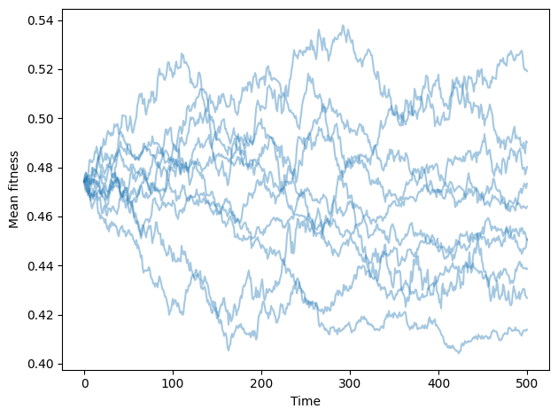
The mean fitness of the population drifts up or down at random. Since the distribution of fitness changes over time, we infer that the distribution of phenotypes is also changing. By the most inclusive definition, this random walk is a kind of evolution. But it is not a particularly interesting kind.
In particular, this kind of evolution does not explain how biological species change over time, or how new species appear. The theory of evolution is powerful because it explains phenomena we see in the natural world that seem inexplicable:
Adaptation: Species interact with their environments in ways that seem too complex, too intricate, and too clever to happen by chance. Many features of natural systems seem as if they were designed.
Increasing diversity: Over time the number of species on earth has generally increased (despite several periods of mass extinction).
Increasing complexity: The history of life on earth starts with relatively simple life forms, with more complex organisms appearing later in the geological record.
These are the phenomena we want to explain. So far, our model doesn’t do the job.
11.7. Differential survival#
Let’s add one more ingredient, differential survival. Here’s a class that extends Simulation and overrides choose_dead:
class SimWithDiffSurvival(Simulation):
def choose_dead(self, ps):
"""Choose which agents die in the next timestep.
ps: probability of survival for each agent
returns: indices of the chosen ones
"""
n = len(self.agents)
is_dead = np.random.random(n) > ps
index_dead = np.nonzero(is_dead)[0]
return index_dead
Now the probability of survival depends on fitness; in fact, in this version, the probability that an agent survives each time step is its fitness.
Since agents with low fitness are more likely to die, agents with high fitness are more likely to survive long enough to reproduce. Over time we expect the number of low-fitness agents to decrease, and the number of high-fitness agents to increase.
The following figure shows mean fitness over time for 10 simulations with differential survival.
np.random.seed(17)
plot_sims(fit_land, agent_maker1, SimWithDiffSurvival, MeanFitness, color='C0')
savefig('figs/chap11-2')
Saving figure to file figs/chap11-2
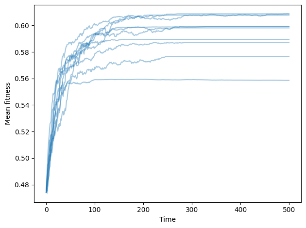
Mean fitness increases quickly at first, but then levels off.
You can probably figure out why it levels off: if there is only one agent at a particular location and it dies, it leaves that location unoccupied. Without mutation, there is no way for it to be occupied again.
With N=8, this simulation starts with 256 agents occupying all possible locations. Over time, the number of occupied locations decreases; if the simulation runs long enough, eventually all agents will occupy the same location.
So this simulation starts to explain adaptation: increasing fitness means that the species is getting better at surviving in its environment. But the number of occupied locations decreases over time, so this model does not explain increasing diversity at all.
We can add differential reproduction by overriding choose_replacements:
class SimWithDiffReproduction(Simulation):
def choose_replacements(self, n, weights):
"""Choose which agents reproduce in the next timestep.
n: number of choices
weights: array of weights
returns: sequence of Agent objects
"""
p = weights / np.sum(weights)
agents = np.random.choice(self.agents, size=n, replace=True, p=p)
replacements = [agent.copy() for agent in agents]
return replacements
As you might expect, differential reproduction (without differential survival) also increases mean fitness, and then levels off.
np.random.seed(17)
plot_sims(fit_land, agent_maker1, SimWithDiffReproduction, MeanFitness, color='C0');
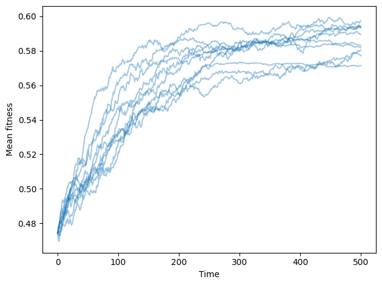
Exercise: The previous examples show the effects of differential reproduction and survival separately. What if you have both? Write a class called SimWithBoth that uses the version of choose_dead from SimWithDiffSurvival and the version of choose_replacements from SimWithDiffReproduction. Does mean fitness increase more quickly?
As a Python challenge, can you write this class without copying code?
But without mutation, we still don’t see increasing diversity. To see that, we’ll use OccupiedLocations, an instrument that counts the number of occupied locations.
class OccupiedLocations(Instrument):
label = 'Occupied locations'
def update(self, sim):
uniq_agents = len(set(sim.get_locs()))
self.metrics.append(uniq_agents)
Here’s what that looks like with no differential survival or reproduction.
np.random.seed(17)
plot_sims(fit_land, agent_maker1, Simulation, OccupiedLocations, color='C2');
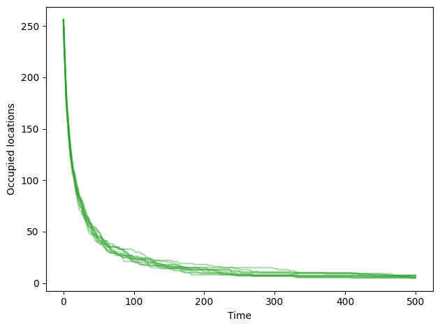
Exercise: What effect do differential survival and reproduction have on the number of occupied locations?
The model we have so far might explain changes in existing populations, but it doesn’t explain increasing diversity or complexity.
11.8. Mutation#
In the simulations so far, we start with the maximum possible diversity — one agent at every location in the landscape — and end with the minimum possible diversity, all agents at one location.
That’s almost the opposite of what happened in the natural world, which apparently began with a single species that branched, over time, into the millions, or possibly billions, of species on Earth today (see https://thinkcomplex.com/bio).
With perfect copying in our model, we never see increasing diversity. But if we add mutation, along with differential survival and reproduction, we get a step closer to understanding evolution in nature.
Here is a class definition that extends Agent and overrides copy:
class Mutant(Agent):
def copy(self, prob_mutate=0.05):
if np.random.random() > prob_mutate:
loc = self.loc.copy()
else:
direction = np.random.randint(self.fit_land.N)
loc = self.mutate(direction)
return Mutant(loc, self.fit_land)
In this model of mutation, every time we call copy, there is a 5% chance of mutation. In case of mutation, we choose a random direction from the current location — that is, a random bit in the genotype — and flip it. Here’s mutate:
%%add_method_to Mutant
def mutate(self, direction):
"""Computes the location in the given direction.
Result differs from the current location along the given axis.
direction: int index from 0 to N-1
returns: new array of N 0s and 1s
"""
new_loc = self.loc.copy()
new_loc[direction] ^= 1
return new_loc
The operator ^= computes “exclusive OR”; with the operand 1, it has the effect of flipping a bit (see https://thinkcomplex.com/xor).
To test it out, I’ll create an agent at a random location.
N = 8
fit_land = FitnessLandscape(N)
loc = fit_land.random_loc()
agent = Mutant(loc, fit_land)
agent.loc
array([0, 0, 0, 1, 1, 1, 0, 0], dtype=int8)
If we make 20 copies, we expect about one mutant.
for i in range(20):
copy = agent.copy()
print(fit_land.distance(agent.loc, copy.loc))
0
0
0
0
0
0
0
0
0
0
0
0
1
0
1
1
0
0
0
0
Now that we have mutation, we don’t have to start with an agent at every location. Instead, we can start with the minimum variability: all agents at the same location. agent_maker2 makes 100 identical agents.
def agent_maker2(fit_land):
agents = make_identical_agents(fit_land, 100, Mutant)
return agents
The following figure shows the results of 10 simulations with mutation and differential survival and reproduction.
np.random.seed(17)
sim = plot_sims(fit_land, agent_maker2, SimWithBoth, MeanFitness, color='C0')
savefig('figs/chap11-3')
Saving figure to file figs/chap11-3
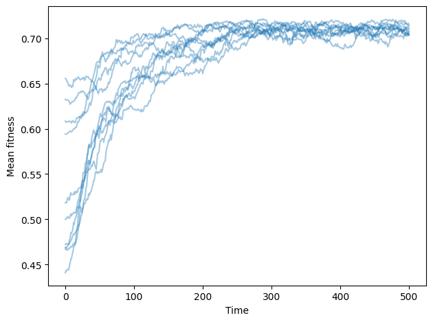
In every case, the population evolves toward the location with maximum fitness.
To measure diversity in the population, we can plot the number of occupied locations after each time step. The following figure shows the results. We start with 100 agents at the same location. As mutations occur, the number of occupied locations increases quickly.
np.random.seed(17)
sim = plot_sims(fit_land, agent_maker2,
SimWithBoth, OccupiedLocations,
color='C2', linewidth=1)
savefig('figs/chap11-4')
Saving figure to file figs/chap11-4
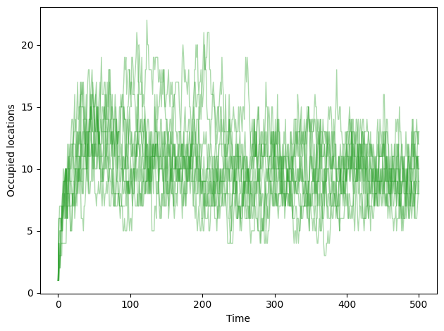
When an agent discovers a high-fitness location, it is more likely to survive and reproduce. Agents at lower-fitness locations eventually die out. Over time, the population migrates through the landscape until most agents are at the location with the highest fitness.
At that point, the system reaches an equilibrium where mutation occupies new locations at the same rate that differential survival causes lower-fitness locations to be left empty.
The number of occupied locations in equilibrium depends on the mutation rate and the degree of differential survival. In these simulations the number of unique occupied locations at any point is typically 5–15.
It is important to remember that the agents in this model don’t move, just as the genotype of an organism doesn’t change. When an agent dies, it can leave a location unoccupied. And when a mutation occurs, it can occupy a new location. As agents disappear from some locations and appear in others, the population migrates across the landscape, like a glider in Game of Life. But organisms don’t evolve; populations do.
11.9. Speciation#
The theory of evolution says that natural selection changes existing species and creates new ones. In our model, we have seen changes, but we have not seen a new species. It’s not even clear, in the model, what a new species would look like.
Among species that reproduce sexually, two organisms are considered the same species if they can breed and produce fertile offspring. But the agents in the model don’t reproduce sexually, so this definition doesn’t apply.
Among organisms that reproduce asexually, like bacteria, the definition of species is not as clear-cut. Generally, a population is considered a species if their genotypes form a cluster, that is, if the genetic differences within the population are small compared to the differences between populations.
Before we can model new species, we need the ability to identify clusters of agents in the landscape, which means we need a definition of distance between locations. Since locations are represented with arrays of bits, we’ll define distance as the number of bits that differ between locations. That’s what the distance method in FitnessLandscape computes:
loc1 = fit_land.random_loc()
loc2 = fit_land.random_loc()
print(loc1)
print(loc2)
fit_land.distance(loc1, loc2)
[1 1 0 1 0 1 0 1]
[1 1 0 1 1 0 1 0]
np.int64(4)
It uses the logical_xor function, which computes “exclusive OR”, which is True for bits that differ, and False for the bits that are the same.
np.logical_xor(loc1, loc2)
array([False, False, False, False, True, True, True, True])
To quantify the dispersion of a population, we can compute the mean of the distances between pairs of agents. The MeanDistance instrument computes this metric after each time step.
class MeanDistance(Instrument):
"""Computes mean distance between pairs at each timestep."""
label = 'Mean distance'
def update(self, sim):
# all pairs of distinct agents
n = len(sim.agents)
i1, i2 = np.triu_indices(n, k=1)
agents = zip(sim.agents[i1], sim.agents[i2])
distances = [sim.fit_land.distance(a1.loc, a2.loc)
for a1, a2 in agents]
mean = np.mean(distances)
self.metrics.append(mean)
The following figure shows mean distance between agents over time.
np.random.seed(17)
fit_land = FitnessLandscape(10)
agents = make_identical_agents(fit_land, 100, Mutant)
sim = SimWithBoth(fit_land, agents)
sim.add_instrument(MeanDistance())
sim.run(500)
sim.plot(0, color='C1')
decorate(xlabel='Time', ylabel='Mean distance')
savefig('figs/chap11-5')
Saving figure to file figs/chap11-5
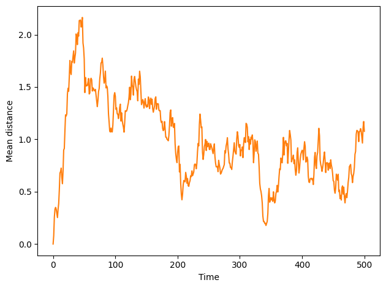
Because we start with identical mutants, the initial distances are 0. As mutations occur, mean distance increases, reaching a maximum while the population migrates across the landscape.
Once the agents discover the optimal location, mean distance decreases until the population reaches an equilibrium where increasing distance due to mutation is balanced by decreasing distance as agents far from the optimal location disappear. Here’s the average over the second half of the simulation:
np.mean(sim.instruments[0].metrics[250:])
np.float64(0.7635003420660791)
In these simulations, the mean distance in equilibrium is near 1; that is, most agents are only one mutation away from optimal.
Now we are ready to look for new species. To model a simple kind of speciation, suppose a population evolves in an unchanging environment until it reaches steady state (like some species we find in nature that seem to have changed very little over long periods of time).
Now suppose we either change the environment or transport the population to a new environment. Some features that increased fitness in the old environment might decrease it in the new environment, and vice versa.
We can model these scenarios by running a simulation until the population reaches steady state, then changing the fitness landscape, and then resuming the simulation until the population reaches steady state again.
np.random.seed(17)
fit_land = FitnessLandscape(10)
agents = make_identical_agents(fit_land, 100, Mutant)
sim = SimWithBoth(fit_land, agents)
sim.add_instrument(MeanFitness())
sim.add_instrument(OccupiedLocations())
sim.add_instrument(MeanDistance())
sim.run(500)
locs_before = sim.get_locs()
fit_land.set_values()
sim.run(500)
locs_after = sim.get_locs()
vline_options = dict(color='gray', linewidth=2, alpha=0.4)
The following figure shows mean fitness over time. After 500 time steps, we change the fitness landscape.
sim.plot(0, color='C0')
plt.axvline(500, **vline_options)
decorate(xlabel='Time', ylabel='Mean fitness')
savefig('figs/chap11-6')
Saving figure to file figs/chap11-6
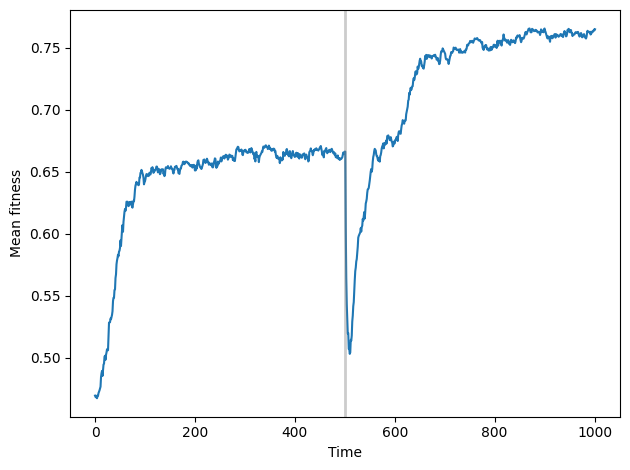
We start with 100 identical mutants at a random location, and run the simulation for 500 time steps. At that point, many agents are at the optimal location. Here’s the mean fitness just before the change, and at the end:
metrics = sim.instruments[0].metrics
metrics[500], metrics[-1]
(np.float64(0.6661175186093685), np.float64(0.7647659858007326))
At the optimal location in the first landscape, mean fitness is near 0.67, and the genotypes of the agents form a cluster, with the mean distance between agents near 1.
After 500 steps, we run FitnessLandscape.set_values, which changes the fitness landscape; then we resume the simulation. Mean fitness is lower, as we expect because the optimal location in the old landscape is no better than a random location in the new landscape.
After the change, mean fitness increases again as the population migrates across the new landscape, eventually finding the new optimum, where mean fitness is near 0.76 (which happens to be higher in this example, but needn’t be).
The number of occupied locations (sometimes) increases while the population is migrating.
sim.plot(1, color='C2')
plt.axvline(500, **vline_options)
decorate(xlabel='Time', ylabel='Occupied locations')
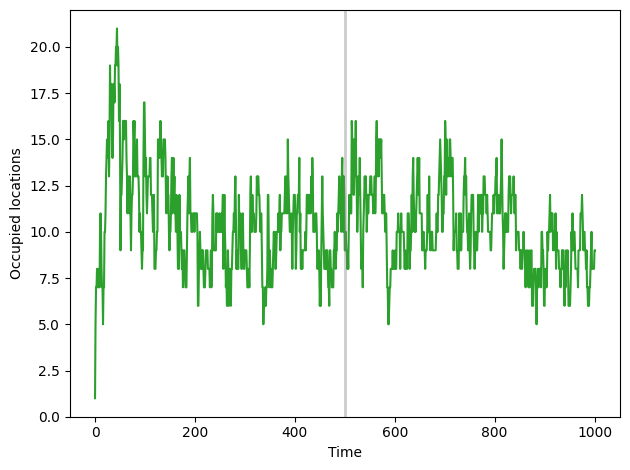
And the mean distance (sometimes) increases until the population reaches the new steady state.
sim.plot(2, color='C1')
plt.axvline(500, **vline_options)
decorate(xlabel='Time', ylabel='Mean distance')
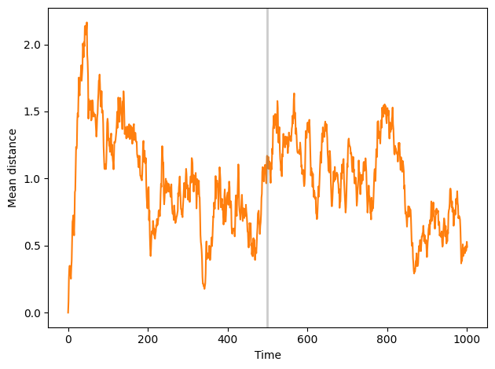
Once the population reaches steady state, it forms a new cluster.
Now if we compute the distance between the agents’ locations before and after the change, they differ by more than 6, on average.
distances = []
for loc1 in locs_before:
for loc2 in locs_after:
distances.append(fit_land.distance(loc1, loc2))
np.mean(distances)
np.float64(6.3948)
The distances between clusters are much bigger than the distances between agents in each cluster, so we can interpret these clusters as distinct species.
11.10. Summary#
We have seen that mutation, along with differential survival and reproduction, is sufficient to cause increasing fitness, increasing diversity, and a simple form of speciation. This model is not meant to be realistic; evolution in natural systems is much more complicated than this. Rather, it is meant to be a “sufficiency theorem”; that is, a demonstration that the features of the model are sufficient to produce the behavior we are trying to explain (see https://thinkcomplex.com/suff).
Logically, this “theorem” doesn’t prove that evolution in nature is caused by these mechanisms alone. But since these mechanisms do appear, in many forms, in biological systems, it is reasonable to think that they at least contribute to natural evolution.
Likewise, the model does not prove that these mechanisms always cause evolution. But the results we see here turn out to be robust: in almost any model that includes these features — imperfect replicators, variability, and differential reproduction — evolution happens.
I hope this observation helps to demystify evolution. When we look at natural systems, evolution seems complicated. And because we primarily see the results of evolution, with only glimpses of the process, it can be hard to imagine and hard to believe.
But in simulation, we see the whole process, not just the results. And by including the minimal set of features to produce evolution — temporarily ignoring the vast complexity of biological life — we can see evolution as the surprisingly simple, inevitable idea that it is.
11.11. Exercises#
Exercise: When we change the landscape, the number of occupied locations and the mean distance usually increase, but the effect is not always big enough to be obvious. You might want to try out some different random seeds to see how general the effect is.
Copyright 2016 Allen B. Downey
Code license: MIT License
Text license: Creative Commons Attribution-NonCommercial-ShareAlike 4.0 International